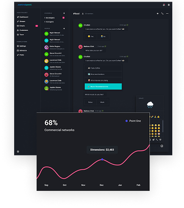
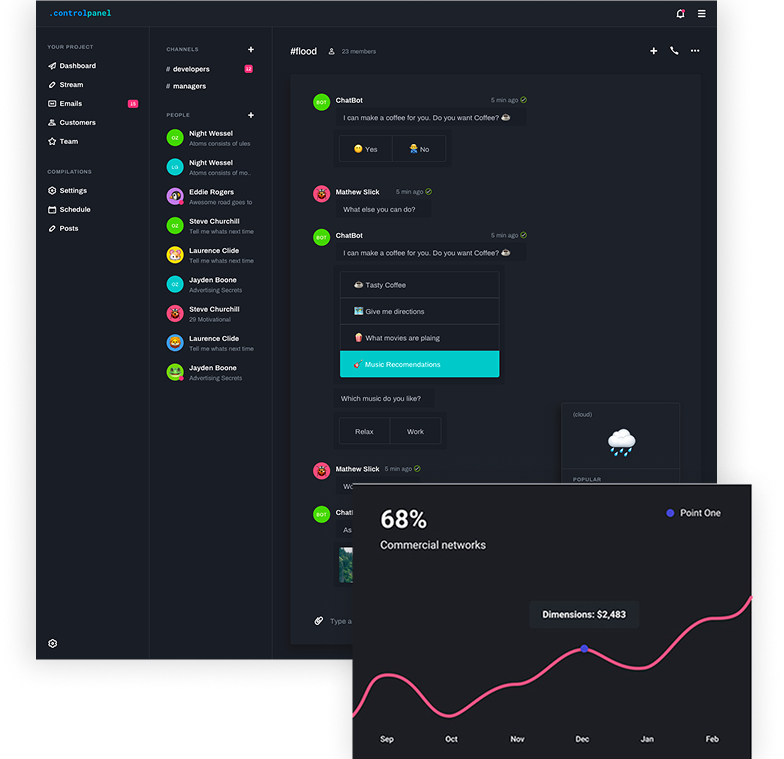

<section class="features">
  <div class="container features__container">
    <h2 class="features__title">FEATURES</h2>
    <p class="features__subtitle">
      Most calendars are designed for teams. Slate is designed for freelancers
      who want a simple way to plan their schedule.
    </p>
    <div class="features__subcontainer">
      
      

      <ul class="features__list">
        <li class="features__list__item">
          <div class="features__list__text">
            <svg class="features__icon" width="26" height="33">
              <use href="../img/icons.svg#icon-soursOftruth"></use>
            </svg>
            <h3 class="features__list__title">A single source of truth</h3>
          </div>
          <p class="features__list__subtitle">
            When you add work to your Slate calendar we automatically calculate
            useful insights
          </p>
        </li>

        <li class="features__list__item">
          <div class="features__list__text">
            <svg class="features__icon" width="33" height="33">
              <use href="../img/icons.svg#icon-intuitiveInterface"></use>
            </svg>
            <h3 class="features__list__title">Intuitive interface</h3>
          </div>
          <p class="features__list__subtitle">
            When you add work to your Slate calendar we automatically calculate
            useful insights
          </p>
        </li>

        <li class="features__list__item">
          <div class="features__list__text">
            <svg class="features__icon" width="41" height="19">
              <use href="../img/icons.svg#icon-withRules"></use>
            </svg>
            <h3 class="features__list__title">Or with rules</h3>
          </div>
          <p class="features__list__subtitle">
            When you add work to your Slate calendar we automatically calculate
            useful insights
          </p>
        </li>
      </ul>
    </div>
  </div>
</section>
